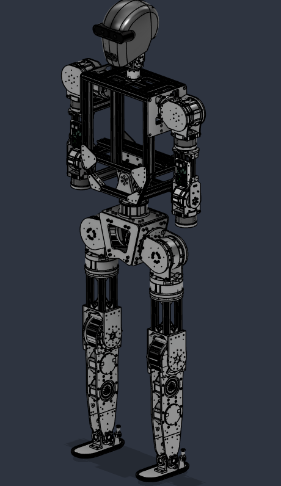
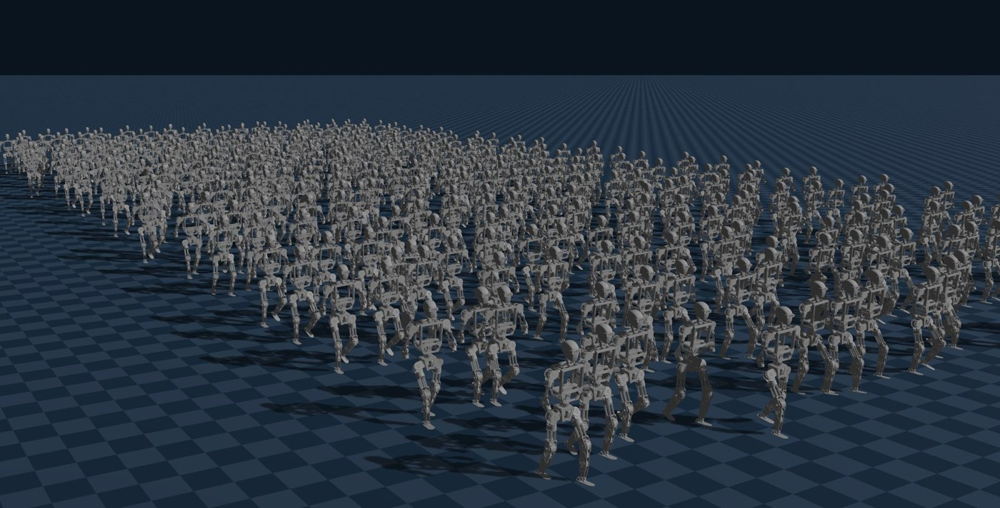

The policy in simulation
About the project
Learned controllers for humanoid robots are trained in simulation, but they can only be proven on a physical robot. This project develops a full-sized humanoid whose hardware can be changed and whose control stack can be modified at every layer above the actuator firmware.
The robot uses commercial back-drivable actuators, selected from a torque analysis of a human walk. The actuators are connected over CAN to five EtherCAT slaves with firmware written for this robot, and an EtherCAT master and an EPICS control layer run on an off-robot computer.
A locomotion policy was trained in the Genesis simulator and checked in MuJoCo through the same runtime that runs on the robot. On the robot, tethered to a gantry, it stood for 120 s and walked forward ten times without a fall.
From design to robot




Credits
Supervisor: Dr W.D. Duckitt. Hand: M.A.G. Smith. Head: J.P. de Freitas. Electronic Systems Laboratory, Department of Electrical and Electronic Engineering, Stellenbosch University.